地政学
ウルムチは新疆の行政中心で、中央アジアへ向かう鉄道、空港、物流、エネルギー政策の要です。国境から離れた内陸の市街でも、周辺国、自治区統治、治安、資源開発が近くにあります。国家の西向き戦略も街に映ります。
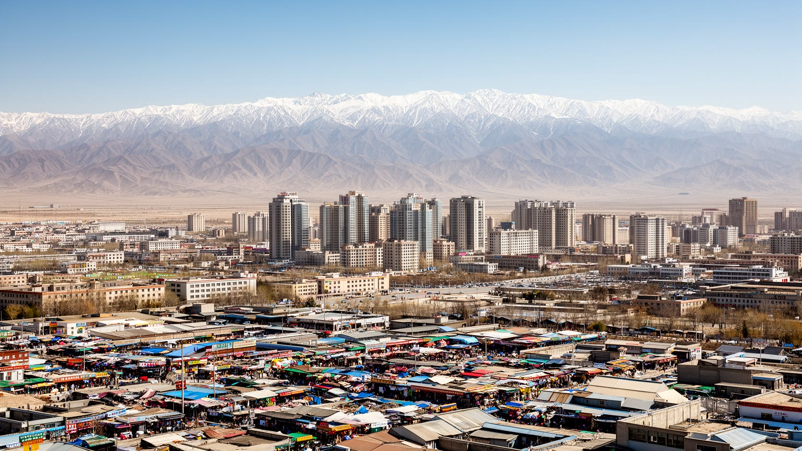
🇨🇳 中国 / 新疆ウイグル自治区 / World City Atlas
天山北麓とジュンガル盆地南縁に広がる新疆ウイグル自治区の首府。エネルギー、物流、民族文化、治安統治、移住、住宅、乾燥地の水、天山観光が重なる内陸都市です。
都市の骨格
ウルムチは海から遠い内陸の大都市でありながら、鉄道、空港、幹線道路、エネルギー産業、行政、大学、バザールを通じて新疆各地と中央アジア方面を結びます。天山の水、乾燥、民族の記憶、治安管理、移住と住宅の変化が、都市の読解を複雑にしています。
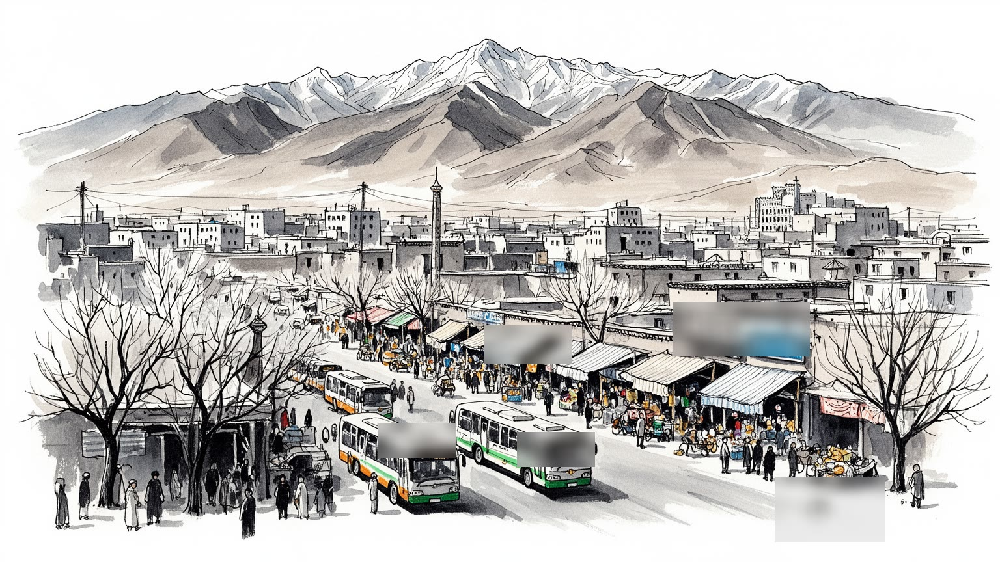
ウルムチは新疆の行政中心で、中央アジアへ向かう鉄道、空港、物流、エネルギー政策の要です。国境から離れた内陸の市街でも、周辺国、自治区統治、治安、資源開発が近くにあります。国家の西向き戦略も街に映ります。
石油化学、電力、商業、卸売、観光、大学、行政、建設、配達が雇用を作ります。移住者、少数民族の商人、国有企業の技術者、サービス労働者が同じ都市経済を支えています。職の層は広いです。仕事は日々続きます。
ウイグル、漢、回、カザフなどの住民が食、言語、音楽、礼拝、祝祭を重ねます。イスラムの生活文化と国家的な公共空間が接し、バザールや家庭料理に多層性が残ります。街の音も複数です。祈りも街で日々続きます。
住民の関心は住宅、学校、就職、物価、冬の暖房、空気、水、移動の便利さです。旅行者は天山天池、国際大バザール、博物館へ向かい、生活都市の緊張も見る街です。休日の山も日常に近いです。季節感も近いです。
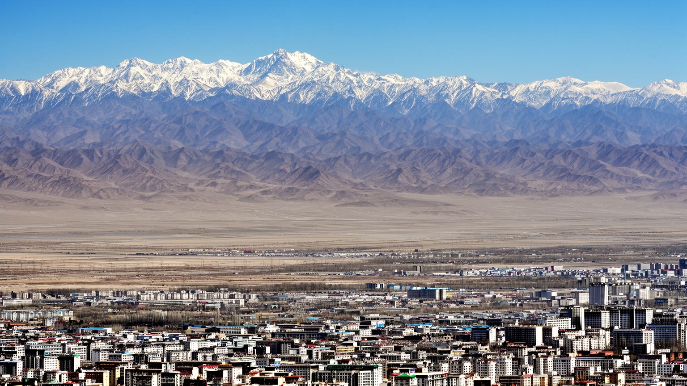
ウルムチは天山山脈の北麓にあり、南側の山地と北側へ開くジュンガル盆地の境界に市街を広げています。海から遠いことは都市の象徴として語られますが、実際の生活を決めるのは距離そのものより、乾燥、寒暖差、風、雪、山から下りる水、盆地の大気です。市の南には山地の谷や保養地があり、北と東には工業地、物流拠点、新しい住宅地が伸びます。天山は美しい背景であると同時に、水源、生態、防災、観光、軍事的な地形でもあります。乾燥地の都市は緑を維持するにも水を必要とし、道路や住宅が広がるほど配分の緊張は大きくなります。冬の暖房、夏の日差し、砂じん、盆地に滞留する空気は、住民の身体感覚に直結します。地理を読むと、ウルムチは単なる辺境の首府ではなく、山から水を受け、盆地へ物流を流し、広大な自治区を管理する実務的な都市として立ち上がります。中心部の高層ビルや商業施設だけでは、山麓の水路、郊外の工業団地、冬の道路管理、雪解け期の洪水リスクは見えません。都市の成長は地形に沿って進み、地形の制約に押し戻されます。だからこそ、ウルムチの景観では、遠くの山並みと日常のインフラを同時に見ることが重要です。山地に近い市街では、同じ都市の中でも標高、風向き、雪の残り方が変わり、通勤や物流の時間にも影響します。地形は背景ではなく、行政区域、住宅価格、工業立地、観光の動線を静かに決める力です。
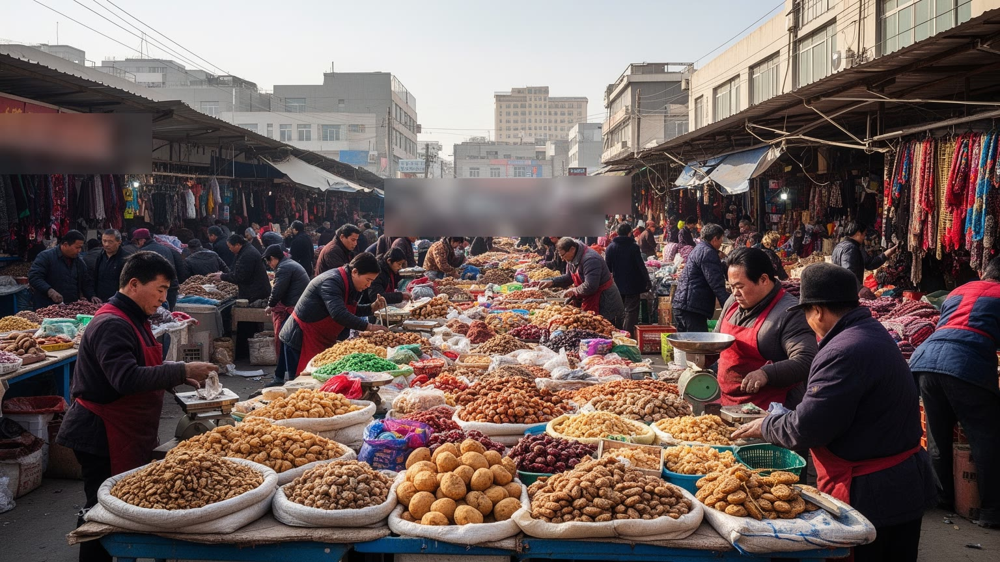
ウルムチのバザールは観光写真のためだけに存在する場所ではありません。干し果物、ナッツ、羊肉、ナン、香辛料、衣料、絨毯、日用品が並び、仕入れ、値付け、運搬、清掃、警備、飲食、通訳、タクシーの呼び込みが同時に動きます。国際大バザールのような整えられた空間では、民族文化が分かりやすく展示され、旅行者は色彩と音に引き寄せられます。一方で、店を支えるのは家族経営、長時間労働、季節変動、家賃、検査、観光客の波に左右される現実です。ウイグル語、漢語、回族の商いの言葉、観光客向けの英語や中央アジア系の言葉が混ざる場面もあり、市場は都市の多言語性を直接見せます。ただし、商業化された民族表象だけを見ていると、礼拝、家庭、教育、就職、移動制限への不安など、住民が抱える生活の層は見えにくくなります。バザールを読むには、異国情緒ではなく、誰が商品を運び、誰が価格を決め、誰が監視と規制の中で商売を続けるのかを考える必要があります。都市の市場は、消費の舞台である前に、働く人の時間が積み重なる場所です。観光客が短時間で通り過ぎる通路にも、毎朝の搬入、夕方の在庫整理、冬の寒さへの備えがあります。その手触りが、ウルムチを生活都市として見せます。市場の周辺には銀行、携帯店、食堂、宿、配送拠点が集まり、小さな取引が広い地域経済へ接続します。写真に残る色彩と、帳簿に残る利益の両方を見ると、バザールは文化施設ではなく都市の仕事場だと分かります。
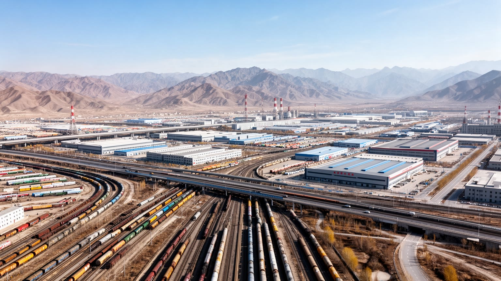
ウルムチの経済は、観光や市場の表情だけでなく、新疆全体の資源、工業、物流を束ねる機能に支えられています。自治区内には石油、天然ガス、石炭、電力、鉱物、農産物の大きな基盤があり、ウルムチには国有企業、管理部門、金融、研究、人材、商社、倉庫、輸送業が集まります。鉄道と高速道路はカザフスタン方面や中国内陸の大都市へつながり、空港は広い自治区を短時間で結ぶ行政とビジネスの入口になります。物流の強さは、都市に雇用と税収をもたらしますが、トラック交通、工業排出、土地利用、郊外化も進めます。エネルギー産業は高賃金の技術職を生む一方、現場労働、保守、警備、寮、食堂、清掃など多数の支えも必要です。資源開発は国家的な安全保障や西部開発と結びつき、地域住民の雇用、環境、土地、民族関係にも影響します。ウルムチを内陸の商業都市としてだけ見ると、この資源と制度の厚い層を見落とします。都市の高層ビルや広い道路の背後には、遠い油田、炭鉱、送電線、貨物駅、保税区、開発区のネットワークがあります。その結びつきが強いほど、ウルムチは新疆の中枢になりますが、成長の利益がどの住民へ届くのかは常に問われます。物流は地図の線ではなく、労働条件と地域格差を伴う都市の現実です。貨物列車の時刻、通関の手続き、倉庫の夜勤、冬の道路確保は、派手ではありませんが都市の競争力を支えます。資源と物流の都市では、見えにくい保守の仕事こそ経済の信頼性を決めます。
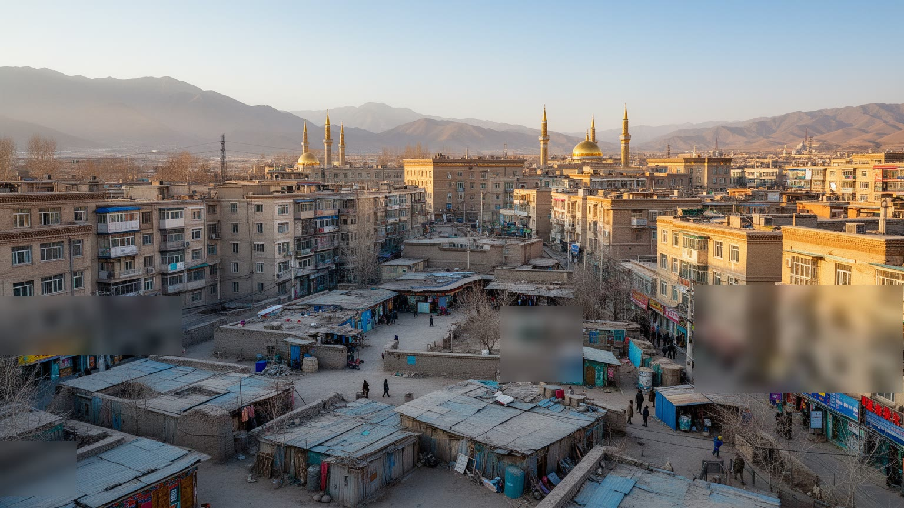
ウルムチの近隣生活は、ウイグル、漢、回、カザフ、モンゴル、ロシア系などの多様な住民が、同じ都市サービスを使いながら異なる記憶を持つところに特徴があります。古い路地、モスク周辺、団地、新興住宅地、大学近く、郊外の開発区では、聞こえる言語、食堂の匂い、礼拝や祝日のリズム、学校選択、店の看板、親族のつながりが少しずつ違います。民族の多様性は観光用の彩りとして語られがちですが、実際には住まい、職場、教育、婚姻、行政手続き、安全確認、移動のしやすさに関わる生活条件です。再開発や道路拡張が進むと、古い近隣の店や中庭、徒歩圏の関係が失われることもあります。新しい住宅は設備や衛生を改善する一方、家賃や管理費、通勤距離、近所づきあいを変えます。多民族都市を読むには、単に料理や衣装を並べるだけでなく、互いの距離の取り方、共有される公共空間、制度によって作られる境界を見る必要があります。ウルムチでは、民族文化が見える場所ほど観光と管理の視線も強くなります。その中で住民は、日々の買い物、子どもの送り迎え、礼拝、食事、仕事を続けています。都市の豊かさは、多様性を展示することではなく、異なる背景の住民が普通に暮らせる条件を保つことにあります。学校、病院、公園、バス停の距離は、民族や言語の違いを越えて共有される課題です。近隣の小さな挨拶や取引が続くかどうかは、大きな政策以上に都市の信頼を左右します。
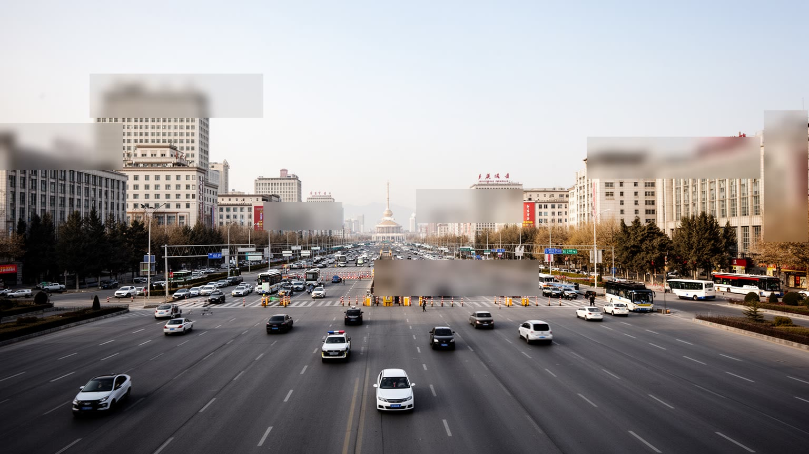
ウルムチを語るうえで、治安と記憶を避けることはできません。新疆では民族関係、宗教、分離主義への警戒、暴力事件の記憶、国家統治が長く重なり、都市空間にも検問、監視カメラ、警備拠点、身分確認、公共施設の管理が見える場面があります。こうした秩序は安全を守る制度として説明される一方、住民の移動、信仰、言語、家族関係、職場、学校生活に重い影響を及ぼすことがあります。外から訪れる人には、整った道路や静かな商業施設がまず目に入りますが、その静けさの背後には、語りにくい不安や記憶を抱える人もいます。都市の治安は単に犯罪率や警備の問題ではなく、誰が自由に話せるのか、どの記憶が公的に語られ、どの記憶が沈黙に置かれるのかという社会の問題でもあります。ウルムチの近年の都市再編は、近代化、観光整備、衛生、交通改善と結びついていますが、同時に古い街区や宗教生活、少数民族の文化表現をどう扱うかという緊張を含みます。この都市を読むには、断定的な単純化を避け、住民の安全、尊厳、恐れ、生活の安定が同時に問われていることを理解する必要があります。見える景観だけでなく、語られにくい経験への想像力が、ウルムチを世界都市として考える入口になります。治安の強調は、外部の旅行者には安心として映ることもありますが、日常的に確認を受ける側には疲労として蓄積します。都市の秩序を評価する時には、静かに保たれた街路と、その静けさを支える負担を同時に見る必要があります。
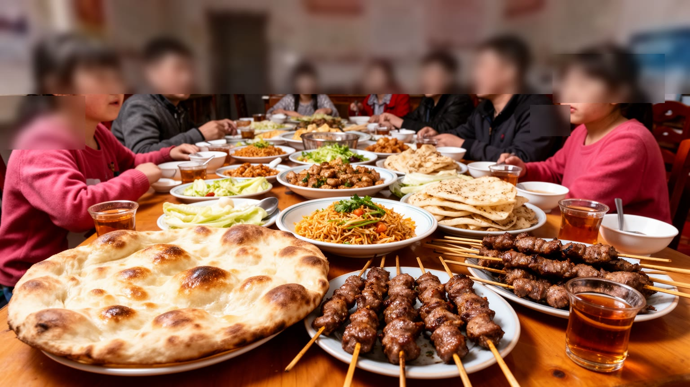
ウルムチの食文化は、羊肉、小麦、乳製品、干し果物、ナッツ、茶、香辛料を軸に、中央アジアと中国内陸の味が重なります。ラグメン、ポロ、ナン、串焼き、サムサ、ヨーグルト、甘い瓜や葡萄は、観光客の記憶に残るだけでなく、家庭、学生食堂、労働者の昼食、長距離移動の食事として都市を支えています。回族の清真食、漢族の麺や火鍋、カザフ系の乳製品、ロシア風の菓子やパンの記憶も加わり、食卓は単一の民族文化に閉じません。料理の背後には、郊外や南北疆から届く農畜産物、冷蔵物流、朝の仕込み、家族経営の厨房、食品衛生、宗教規範、観光価格の設定があります。食は多様性を楽しく見せる入口ですが、同時に社会の境界も示します。何を食べられるか、どの店に入りやすいか、祝日に何を分け合うかは、信仰、言語、親族、近所づきあいと結びついています。ウルムチの食を読むと、乾燥地で育った作物、牧畜の記憶、移住者の味、都市化した外食産業が一つの皿の上に集まることが分かります。名物を消費するだけではなく、早朝に粉をこねる手、肉を切る仕事、茶を注ぐ時間、家族で囲む食卓を想像すると、都市の文化はより深く見えてきます。食堂の席では、出張者、学生、家族連れ、長距離運転手が同じ湯気を囲みます。価格、量、宗教上の配慮、言語のやり取りが、都市の共存を日々の食事として形にしています。
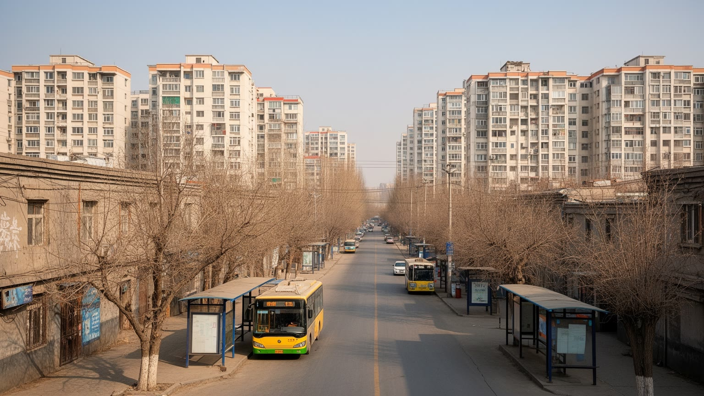
ウルムチの人口は、自治区内各地からの進学、就職、行政異動、商売、建設労働、漢族を含む内地からの移住によって増えてきました。首府には大学、病院、企業、行政機関、商業施設が集まり、若者や家族は教育と仕事の機会を求めて集まります。都市の外側では高層住宅、団地、開発区、ショッピングモール、広い道路が広がり、古い低層街区や市場周辺の暮らしは少しずつ変わります。新しい住宅は暖房、上下水、エレベーター、学校へのアクセスを改善しますが、家賃や購入価格、管理費、職場までの距離、近隣関係の薄さも生みます。移住者にとって、都市に住むことは収入の機会である一方、戸籍、社会保障、子どもの教育、言語、職場の安定をめぐる不安を伴います。少数民族の住民にとっては、再開発が生活改善であると同時に、親族や礼拝、商売の近さを失う経験になることもあります。住宅地を読むと、ウルムチの近代化は単に建物が新しくなることではなく、住民の距離感、毎日の移動、互助の形、都市への帰属感を作り替える過程だと分かります。広い大通りや整った団地の背後には、誰が中心に近く住めるのか、誰が長く通勤するのかという社会的な地図があります。人口の増加は数字だけでなく、生活圏の再編として現れます。新しい住まいに移ることは、暖かい部屋や清潔な設備を得ることでもあり、古い隣人や市場への近さを失うことでもあります。都市政策の成果は、床面積だけでなく、孤立せず暮らせる近隣が育つかで測られます。
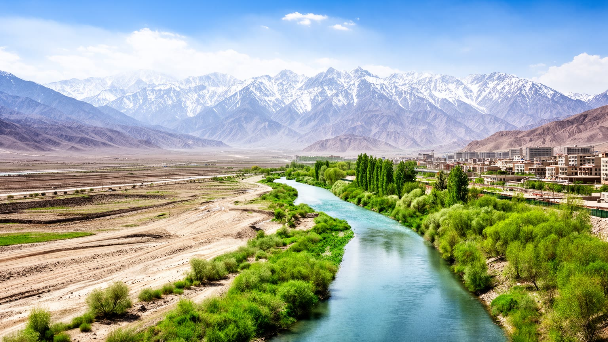
ウルムチの暮らしは、乾燥した大陸性気候と水の制約に大きく左右されます。夏は日差しが強く乾き、冬は長く寒く、暖房と断熱は生活の基本になります。山から下りる水、地下水、貯水、配水、節水、下水処理は、住宅、工業、緑地、観光、農業を同時に支える見えにくいインフラです。街路樹や公園は乾いた都市に涼しさと休息を与えますが、その緑を維持するにも水が必要です。人口増加と工業化が進むほど、水の配分は行政、企業、住民の間で重要な判断になります。さらに、盆地状の地形と冬の暖房は大気汚染の問題を生みやすく、石炭利用、車、工場、気象条件が重なると、空の見え方は生活の質に関わります。気候変動は雪解け水の時期、乾燥、極端な暑さ、山地の生態にも影響し、観光や都市防災にもつながります。ウルムチを読むには、華やかな中心部だけでなく、蛇口の水、暖房の熱、乾いた肌、風に舞う砂、冬の空気を感じる必要があります。乾燥地の都市は、水を得る技術と、水を使いすぎない制度の上に成り立ちます。天山の美しさは、観光資源である前に、都市を生かす水の源です。その水をどう分け、どう汚さず、どう将来へ残すかが、ウルムチの持続性を決めます。水道料金、漏水対策、工場の排水、住宅地の節水設備は、観光名所ほど目立ちません。それでも、そうした地味な管理がなければ、乾燥地の大都市は毎日の暮らしを維持できません。
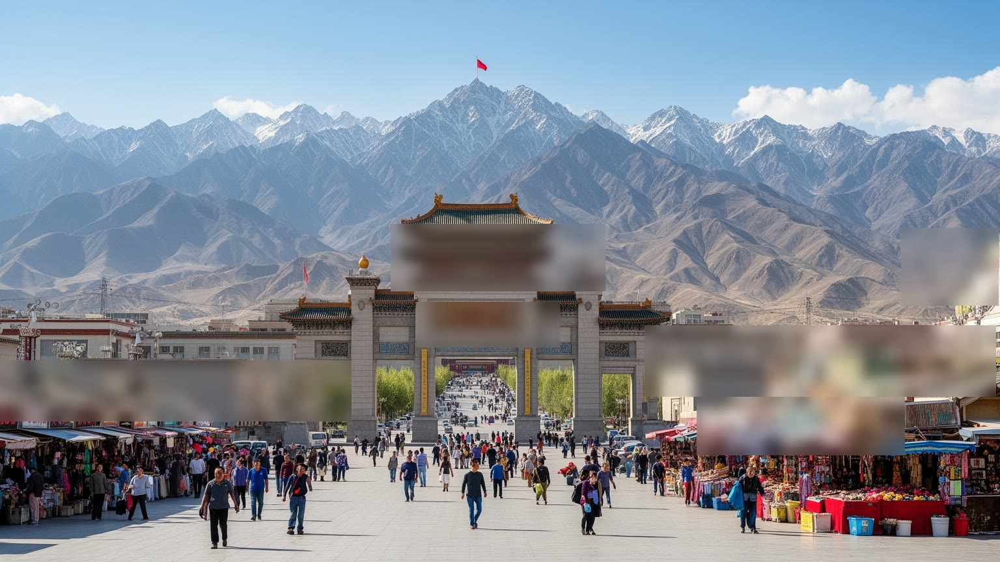
ウルムチは新疆観光の玄関口として機能します。旅行者は空港や鉄道駅に到着し、天山天池、南山牧場、自治区博物館、国際大バザール、紅山公園へ向かい、さらにトルファン、カシュガル、イリ、アルタイ、クチャ、ホータンへ旅を広げます。首府に集まるホテル、旅行会社、レンタカー、ガイド、飲食店、土産物店、交通案内は、広大な自治区を旅するための実務的な基盤です。観光は雇用を生み、民族文化や自然景観を外へ伝えますが、同時に景観の演出、混雑、価格上昇、文化の単純化、治安管理の強化とも結びつきます。天山の湖や草地は美しく見えますが、道路整備、ゴミ、季節集中、牧畜との調整、水資源への負荷を抱えます。博物館では歴史や考古学が語られますが、展示の順序や言葉は、地域の記憶をどう国家の物語へ組み込むかを示します。ウルムチ観光を読むには、名所を巡るだけでなく、誰が案内し、何が説明され、何が語られにくいのかに注意する必要があります。旅行者にとっては便利な起点でも、住民にとっては生活道路、職場、学校、病院が並ぶ日常の都市です。観光の成功は、収益を上げるだけでなく、自然と文化を消耗させず、住民の暮らしを圧迫しない仕組みを作れるかにかかっています。短い滞在では、整備された景勝地と大型市場が強く記憶に残ります。しかし、空港からホテルへの移動、早朝の清掃、山道の安全管理、博物館の解説員の働きまで含めて初めて、観光都市の実態が見えてきます。
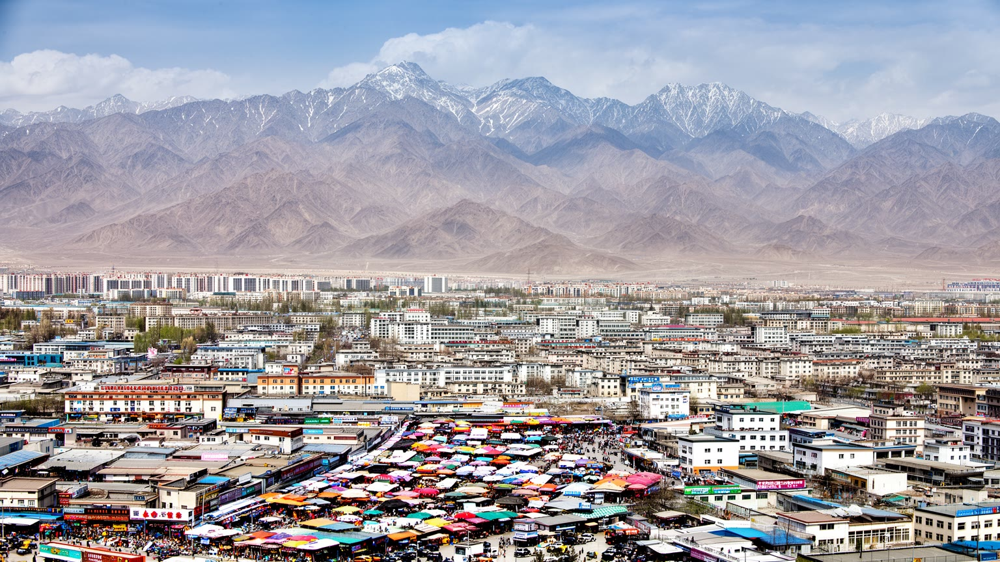
ウルムチを世界都市として読む意味は、巨大な経済規模だけではありません。この都市は、天山の水、乾燥した盆地、自治区行政、資源開発、鉄道と空港、中央アジアへ向かう物流、民族文化、イスラムの生活、治安統治、移住と住宅、観光の入口が重なる場所です。華やかなバザールや山の風景は強い印象を残しますが、それだけでは住民の仕事、学校、信仰、家族、監視への感覚、冬の暖房、水の心配、郊外通勤までは見えてきません。ウルムチの重要性は、広大な新疆を管理し、資源と人を集め、中国内陸とユーラシアの接点を制度的に結ぶ点にあります。同時に、その役割は地域社会に重い緊張ももたらします。都市を単に発展の拠点として見ると、少数民族の記憶や語られにくい経験が消えます。逆に、緊張だけで見ると、毎日の商売、食卓、大学、子どもの通学、山へ向かう休日、働く人の実務を見落とします。必要なのは、国家の地図と生活の地図を重ねる読み方です。ウルムチでは、道路、検問、市場、団地、モスク、博物館、貨物駅、山の水が互いに関係しています。その関係を丁寧に見ることで、海から遠い都市がなぜ地域の中心であり続けるのか、そしてその中心性が誰に利益と負担を与えるのかが見えてきます。都市の価値は、どれだけ遠くへ接続するかだけでなく、そこに住む人がどれだけ安心して普通の一日を送れるかにもあります。ウルムチを読むことは、地政学の大きな線と、食卓や通勤の小さな線を同じ地図に置く作業です。